| date | holiday_name | holiday | shops_closed | winter_school_holidays | school_holidays | warehouse | |
|---|---|---|---|---|---|---|---|
| 0 | 2022-03-16 | NaN | 0 | 0 | 0 | 0 | Frankfurt_1 |
| 1 | 2020-03-22 | NaN | 0 | 0 | 0 | 0 | Frankfurt_1 |
| 2 | 2018-02-07 | NaN | 0 | 0 | 0 | 0 | Frankfurt_1 |
| 3 | 2018-08-10 | NaN | 0 | 0 | 0 | 0 | Frankfurt_1 |
| 4 | 2017-10-26 | NaN | 0 | 0 | 0 | 0 | Prague_2 |
Rohlik Sales Forecasting
 Photo: Matheus Cenali, pexels.com
Photo: Matheus Cenali, pexels.com
About
Predicting sales values is essential for planning, supplying chains, delivery logistics and inventory management. With accurate forecast, businesses can minimaze waste of resources and volume of unnecessary work-related tasks.
The data comes from kaggle competition Rohlik Sales Forecasting Challenge.
The project analyzes historical sales data across multiple European warehouses of grocery chain Rohlik. The goal is to understand sales patterns over time and to engineer meaningful features that can later be used for demand forecasting.
Data:
sales_train.csv - training set containing the historical sales data for given date and inventory with selected features described below
sales_test.csv - testing set
inventory.csv - additional information about inventory like its product (same products across all warehouses share same product unique id and name, but have different unique id)
solution.csv - full submission file in the correct format
calendar.csv - calendar containing data about holidays or warehouse specific events, some columns are already in the train data but there are additional rows in this file for dates where some warehouses could be closed due to public holiday or Sunday (and therefore they are not in the train set)
Information about Data
calendar_df:
<class 'pandas.core.frame.DataFrame'>
RangeIndex: 23016 entries, 0 to 23015
Data columns (total 7 columns):
# Column Non-Null Count Dtype
--- ------ -------------- -----
0 date 23016 non-null object
1 holiday_name 930 non-null object
2 holiday 23016 non-null int64
3 shops_closed 23016 non-null int64
4 winter_school_holidays 23016 non-null int64
5 school_holidays 23016 non-null int64
6 warehouse 23016 non-null object
dtypes: int64(4), object(3)
memory usage: 1.2+ MB'2016-01-01''2024-12-31'The earliest and the latest date in the dataset.
inventory_df:
| unique_id | product_unique_id | name | L1_category_name_en | L2_category_name_en | L3_category_name_en | L4_category_name_en | warehouse | |
|---|---|---|---|---|---|---|---|---|
| 0 | 5255 | 2583 | Pastry_196 | Bakery | Bakery_L2_14 | Bakery_L3_26 | Bakery_L4_1 | Prague_3 |
| 1 | 4948 | 2426 | Herb_19 | Fruit and vegetable | Fruit and vegetable_L2_30 | Fruit and vegetable_L3_86 | Fruit and vegetable_L4_1 | Prague_3 |
| 2 | 2146 | 1079 | Beet_2 | Fruit and vegetable | Fruit and vegetable_L2_3 | Fruit and vegetable_L3_65 | Fruit and vegetable_L4_34 | Prague_1 |
| 3 | 501 | 260 | Chicken_13 | Meat and fish | Meat and fish_L2_13 | Meat and fish_L3_27 | Meat and fish_L4_5 | Prague_1 |
| 4 | 4461 | 2197 | Chicory_1 | Fruit and vegetable | Fruit and vegetable_L2_17 | Fruit and vegetable_L3_33 | Fruit and vegetable_L4_1 | Frankfurt_1 |
<class 'pandas.core.frame.DataFrame'>
RangeIndex: 5432 entries, 0 to 5431
Data columns (total 8 columns):
# Column Non-Null Count Dtype
--- ------ -------------- -----
0 unique_id 5432 non-null int64
1 product_unique_id 5432 non-null int64
2 name 5432 non-null object
3 L1_category_name_en 5432 non-null object
4 L2_category_name_en 5432 non-null object
5 L3_category_name_en 5432 non-null object
6 L4_category_name_en 5432 non-null object
7 warehouse 5432 non-null object
dtypes: int64(2), object(6)
memory usage: 339.6+ KBsales_train_df:
| unique_id | date | warehouse | total_orders | sales | sell_price_main | availability | type_0_discount | type_1_discount | type_2_discount | type_3_discount | type_4_discount | type_5_discount | type_6_discount | |
|---|---|---|---|---|---|---|---|---|---|---|---|---|---|---|
| 0 | 4845 | 2024-03-10 | Budapest_1 | 6436.0 | 16.34 | 646.26 | 1.00 | 0.00000 | 0.0 | 0.0 | 0.0 | 0.15312 | 0.0 | 0.0 |
| 1 | 4845 | 2021-05-25 | Budapest_1 | 4663.0 | 12.63 | 455.96 | 1.00 | 0.00000 | 0.0 | 0.0 | 0.0 | 0.15025 | 0.0 | 0.0 |
| 2 | 4845 | 2021-12-20 | Budapest_1 | 6507.0 | 34.55 | 455.96 | 1.00 | 0.00000 | 0.0 | 0.0 | 0.0 | 0.15025 | 0.0 | 0.0 |
| 3 | 4845 | 2023-04-29 | Budapest_1 | 5463.0 | 34.52 | 646.26 | 0.96 | 0.20024 | 0.0 | 0.0 | 0.0 | 0.15312 | 0.0 | 0.0 |
| 4 | 4845 | 2022-04-01 | Budapest_1 | 5997.0 | 35.92 | 486.41 | 1.00 | 0.00000 | 0.0 | 0.0 | 0.0 | 0.15649 | 0.0 | 0.0 |
<class 'pandas.core.frame.DataFrame'>
RangeIndex: 1048575 entries, 0 to 1048574
Data columns (total 14 columns):
# Column Non-Null Count Dtype
--- ------ -------------- -----
0 unique_id 1048575 non-null int64
1 date 1048575 non-null object
2 warehouse 1048575 non-null object
3 total_orders 1048556 non-null float64
4 sales 1048556 non-null float64
5 sell_price_main 1048575 non-null float64
6 availability 1048575 non-null float64
7 type_0_discount 1048575 non-null float64
8 type_1_discount 1048575 non-null float64
9 type_2_discount 1048575 non-null float64
10 type_3_discount 1048575 non-null float64
11 type_4_discount 1048575 non-null float64
12 type_5_discount 1048575 non-null float64
13 type_6_discount 1048575 non-null float64
dtypes: float64(11), int64(1), object(2)
memory usage: 112.0+ MB'2020-08-01''2024-06-02'The earliest and the latest date in the dataset.
sales_test_df:
| unique_id | date | warehouse | total_orders | sell_price_main | type_0_discount | type_1_discount | type_2_discount | type_3_discount | type_4_discount | type_5_discount | type_6_discount | |
|---|---|---|---|---|---|---|---|---|---|---|---|---|
| 0 | 1226 | 2024-06-03 | Brno_1 | 8679.0 | 13.13 | 0.00000 | 0.0 | 0.0 | 0.0 | 0.0 | 0.0 | 0.0 |
| 1 | 1226 | 2024-06-11 | Brno_1 | 8795.0 | 13.13 | 0.15873 | 0.0 | 0.0 | 0.0 | 0.0 | 0.0 | 0.0 |
| 2 | 1226 | 2024-06-13 | Brno_1 | 10009.0 | 13.13 | 0.15873 | 0.0 | 0.0 | 0.0 | 0.0 | 0.0 | 0.0 |
| 3 | 1226 | 2024-06-15 | Brno_1 | 8482.0 | 13.13 | 0.15873 | 0.0 | 0.0 | 0.0 | 0.0 | 0.0 | 0.0 |
| 4 | 1226 | 2024-06-09 | Brno_1 | 8195.0 | 13.13 | 0.00000 | 0.0 | 0.0 | 0.0 | 0.0 | 0.0 | 0.0 |
<class 'pandas.core.frame.DataFrame'>
RangeIndex: 47021 entries, 0 to 47020
Data columns (total 12 columns):
# Column Non-Null Count Dtype
--- ------ -------------- -----
0 unique_id 47021 non-null int64
1 date 47021 non-null object
2 warehouse 47021 non-null object
3 total_orders 47021 non-null float64
4 sell_price_main 47021 non-null float64
5 type_0_discount 47021 non-null float64
6 type_1_discount 47021 non-null float64
7 type_2_discount 47021 non-null float64
8 type_3_discount 47021 non-null float64
9 type_4_discount 47021 non-null float64
10 type_5_discount 47021 non-null float64
11 type_6_discount 47021 non-null float64
dtypes: float64(9), int64(1), object(2)
memory usage: 4.3+ MB'2024-06-03''2024-06-16'The earliest and the latest date in the dataset.
solution_df:
| id | sales_hat | |
|---|---|---|
| 0 | Brno_1_1226_2024-06-03 | 10.486372 |
| 1 | Brno_1_1226_2024-06-11 | 8.936784 |
| 2 | Brno_1_1226_2024-06-13 | 9.241525 |
| 3 | Brno_1_1226_2024-06-15 | 10.004795 |
| 4 | Brno_1_1226_2024-06-09 | 12.988256 |
<class 'pandas.core.frame.DataFrame'>
RangeIndex: 47021 entries, 0 to 47020
Data columns (total 2 columns):
# Column Non-Null Count Dtype
--- ------ -------------- -----
0 id 47021 non-null object
1 sales_hat 47021 non-null float64
dtypes: float64(1), object(1)
memory usage: 734.8+ KBtest_weight_df:
| unique_id | weight | |
|---|---|---|
| 0 | 0 | 2.535369 |
| 1 | 1 | 3.888933 |
| 2 | 2 | 5.885237 |
| 3 | 3 | 2.139552 |
| 4 | 5 | 3.021715 |
<class 'pandas.core.frame.DataFrame'>
RangeIndex: 5390 entries, 0 to 5389
Data columns (total 2 columns):
# Column Non-Null Count Dtype
--- ------ -------------- -----
0 unique_id 5390 non-null int64
1 weight 5390 non-null float64
dtypes: float64(1), int64(1)
memory usage: 84.3 KBExploratory Data Analysis (EDA)
Exploratory Data Analysis (EDA) reveals basic characteristics of the dataset, such as distributions, ranges, and typical values of variables. This step helps identify what the data represents and how individual features behave. In order to perform proper exploratory analysis and enable further data modelling, additional features will be created from the date variable, including year, month, day, day of the week, and holiday indicators. These features will help capture seasonal patterns and calendar effects that may influence sales behaviour.
sales_train_df["date"] = pd.to_datetime(sales_train_df["date"])
sales_test_df["date"] = pd.to_datetime(sales_test_df["date"])
calendar_df["date"] = pd.to_datetime(calendar_df["date"])
sales_train_df["is_test"] = 0
sales_test_df["is_test"] = 1
data = pd.concat([sales_train_df, sales_test_df], axis=0)
data = data.sort_values(["unique_id", "date"])
# Merging
data = data.merge(calendar_df, on=["date", "warehouse"], how="left")
data = data.merge(inventory_df, on=['unique_id', 'warehouse'], how='left')
data = data.merge(test_weights_df, on=['unique_id'], how='left')
# Data Cleaning and Feature Engineering
data["year"] = data["date"].dt.year
data["month"] = data["date"].dt.month
data["day"] = data["date"].dt.day
data["day_of_week"] = data["date"].dt.dayofweek
data["weekend"] = (data["day_of_week"] >= 5).astype("int8")
# keep holiday numeric
data["holiday"] = data["holiday"].astype("int8")
# categorical ids
data["warehouse"] = data["warehouse"].astype("category")
data["day_of_week"] = data["day_of_week"].astype("category")Daily Sales
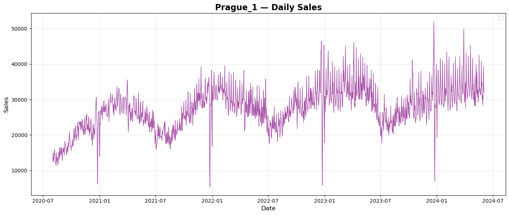
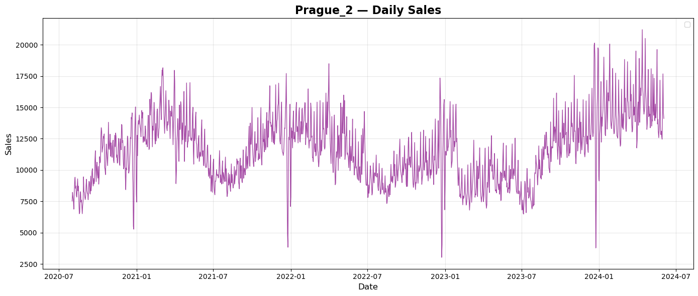
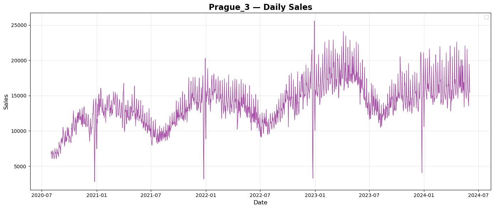
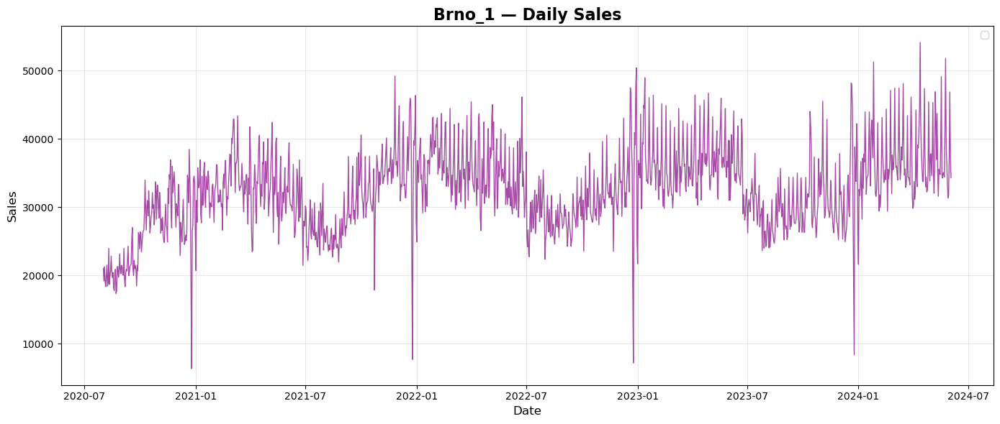
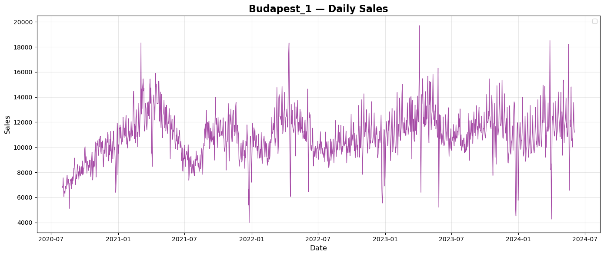
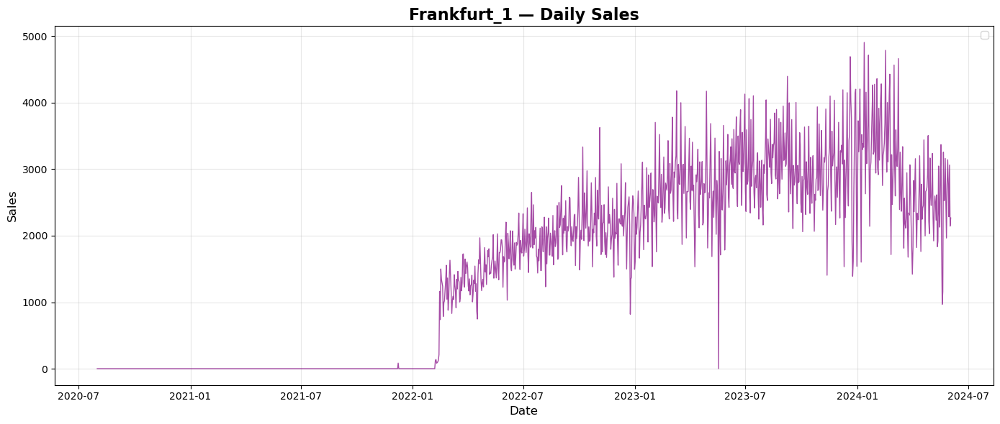
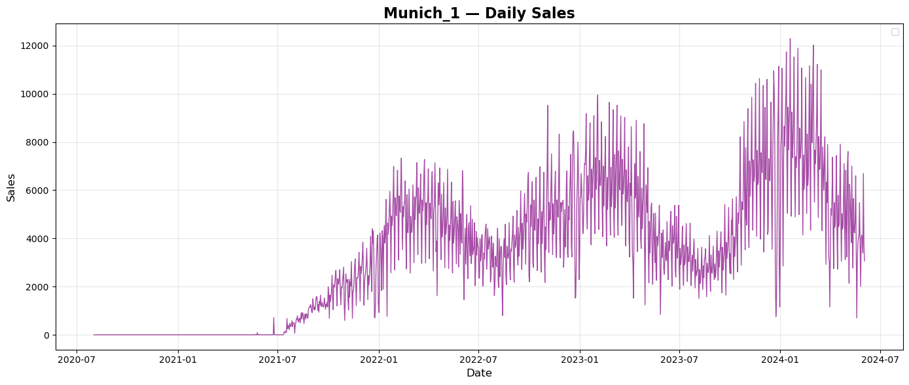
Prague and Brno are both in Czech Republic. Summary sales show simmilar repeated pattern of sales during every year with tendency to grow every year. Budapest is the capital of Hungary. Summary sales plot shows again repeated pattern of sales over years, but a bit different than plots from Czech Republic. There seems to be no tendency of growth over the years. City of Munich is in Germany. Plot of summary daily sales shows again repeated pattern of sales over every year with a tendency to grow each year. City of Frankfurt is in Germany, too. Plot of summary daily sales does not seems to copy the pattern of Munich but there is a tendency to grow each year.
Average sales during weekdays
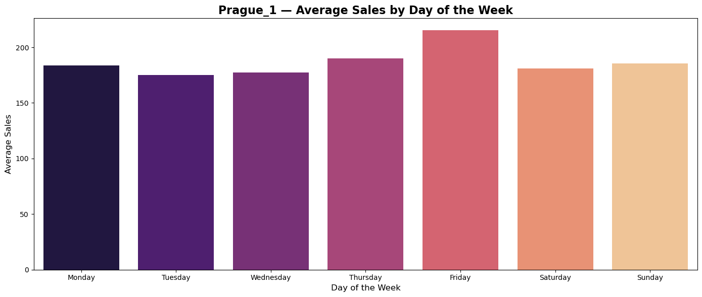
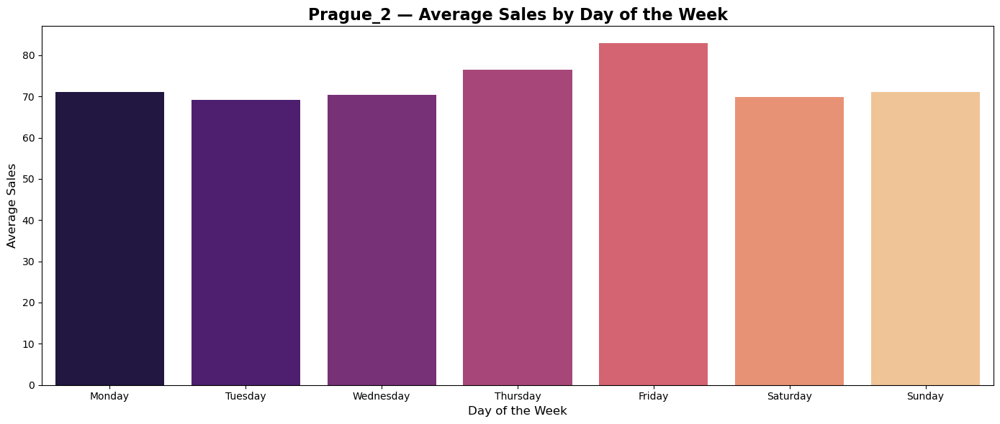
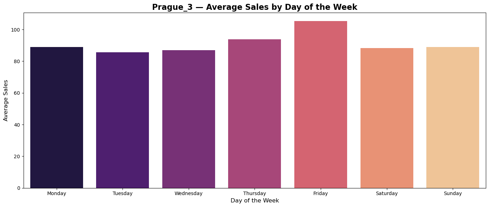
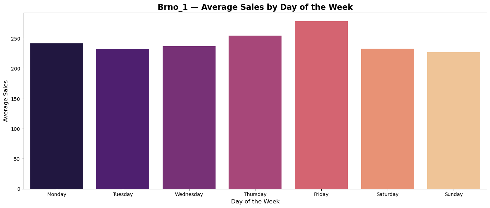
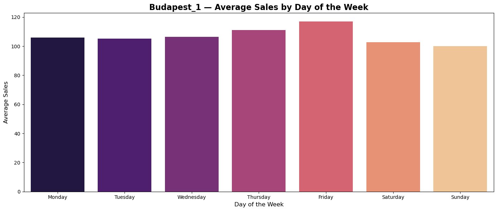
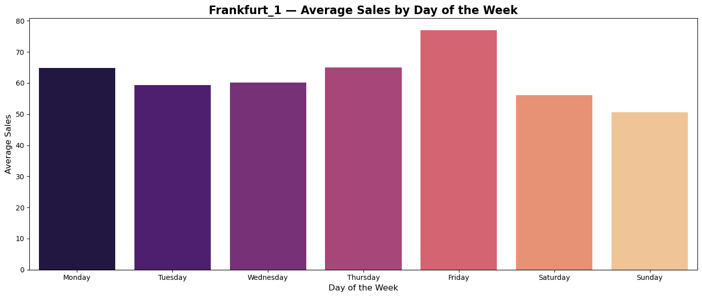
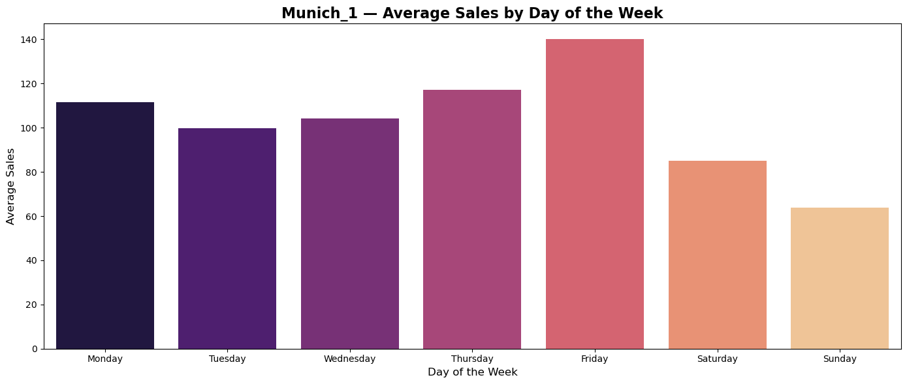
Plots of average sales during weekdays shows tendency of custumers in all countries to do shopping on Thurdays and Fridays.
Average monthly sales
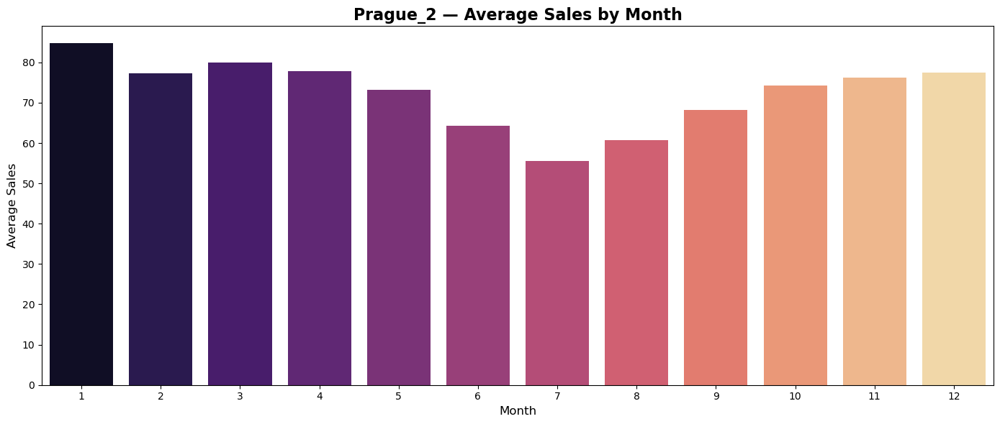
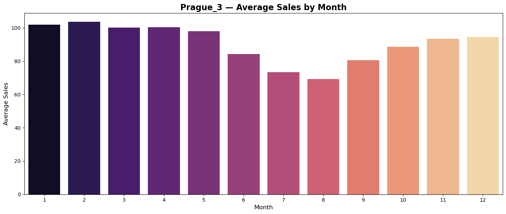
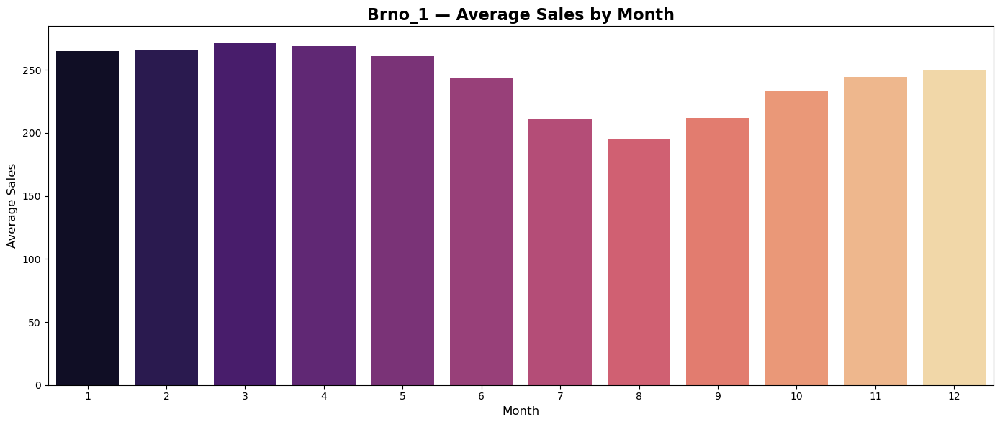
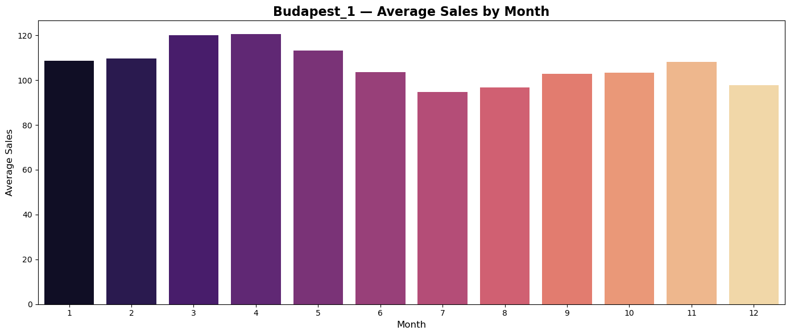
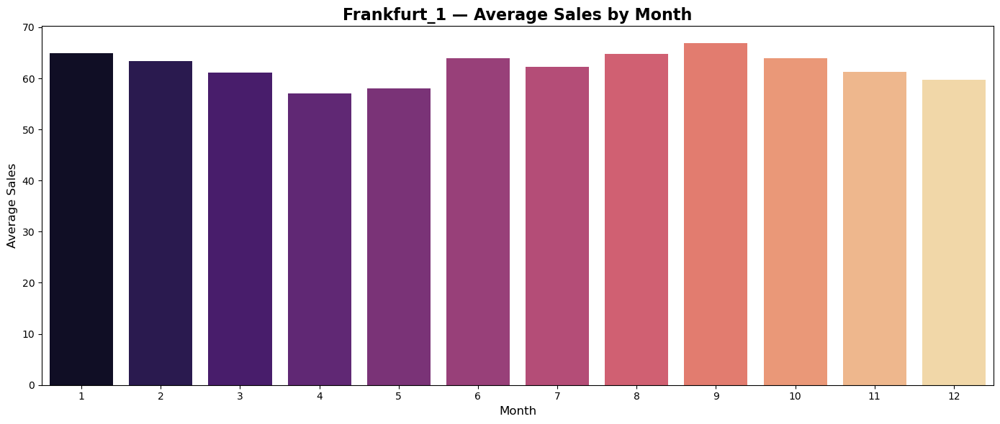
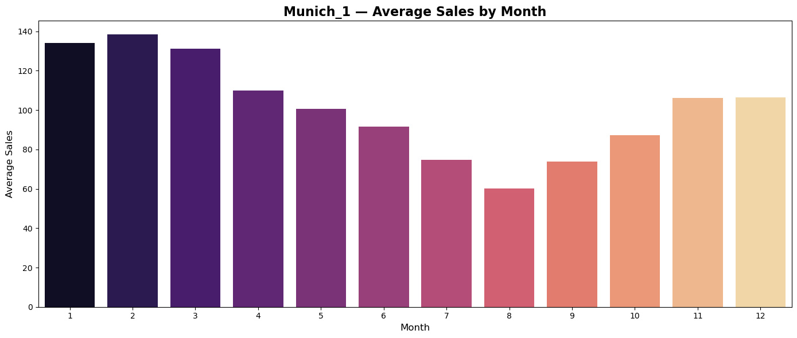
Plots of average monthly sales seems to reflect regionally differences in shopping habits of customers.
Average sales during holidays and common days
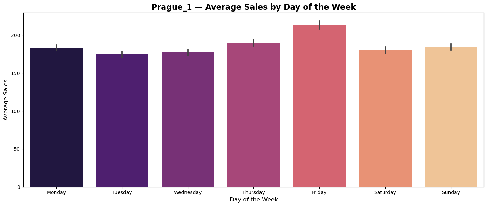
Prediction
Data preparation
To improve model performance, several time-series features will be created, including lagged values, rolling means, and momentum indicators, which will help capture temporal dependencies and short-term trends in the data. Lag features use past observations as predictors, rolling means summarize recent behaviour through moving averages, and momentum measures quantify the recent change in a variable.
# feature engineering
lags = [1, 2, 3, 7, 14, 21, 28, 35, 42, 56]
for lag in lags:
data[f"lag_{lag}"] = (
data.groupby("unique_id")["sales"]
.shift(lag)
)
lags = [1, 7, 14, 28]
for lag in lags:
data[f"orders_lag_{lag}"] = (
data.groupby("warehouse")["total_orders"]
.shift(lag)
)
# rolling
windows = [7, 14, 28]
for w in windows:
data[f"roll_mean_{w}"] = (
data.groupby("unique_id")["sales"]
.shift(1)
.rolling(w)
.mean()
)
# simple momentum signals
data["trend_ratio"] = data["roll_mean_7"] / (data["roll_mean_28"] + 1e-6)
data["momentum_7"] = data["lag_1"] - data["lag_7"]
# warehouse daily total trend
data["warehouse_roll7"] = (
data.groupby(["warehouse", "date"])["sales"]
.transform("sum")
.groupby(data["warehouse"])
.transform(lambda x: x.shift(1).rolling(7).mean())
)
data["product_roll7"] = (
data.groupby(["product_unique_id", "date"])["sales"]
.transform("sum")
.groupby(data["product_unique_id"])
.transform(lambda x: x.shift(1).rolling(7).mean())
)
data["orders_roll7"] = (
data.groupby("warehouse")["total_orders"]
.shift(1)
.rolling(7)
.mean()
)
# dropping redundant columns
data = data.drop(columns=['holiday_name', 'name', 'day' ])
cat_cols = [
"warehouse",
"day_of_week",
"L1_category_name_en",
"L2_category_name_en",
"L3_category_name_en",
"L4_category_name_en",
"product_unique_id"
]
for col in cat_cols:
data[col] = data[col].astype("category")
Model
LightGBM is a machine learning algorithm that predicts outcomes by combining many simple decision trees. Each tree learns from the errors of the previous ones and gradually improves the prediction, allowing the model to capture complex patterns in the data and achieve high predictive accuracy.
# train
train_final = data[data["is_test"] == 0].copy()
# drop rows with missing sales / missing lag history
train_final = train_final.dropna().copy()
y = train_final["sales"].values.ravel()
X = train_final.drop(columns=["sales"]).copy()
# Time split on train
cutoff = train_final["date"].max() - pd.Timedelta(days=14)
train_mask = train_final["date"] < cutoff
valid_mask = train_final["date"] >= cutoff
X_train = X.loc[train_mask].copy()
X_valid = X.loc[valid_mask].copy()
y_train = y[train_mask.values]
y_valid = y[valid_mask.values]
# Weights
train_weights = X_train["weight"].values
valid_weights = X_valid["weight"].values
# Drop non-features
drop_cols = ["unique_id", "date", "is_test", "weight"]
X_train_model = X_train.drop(columns=drop_cols, errors="ignore")
X_valid_model = X_valid.drop(columns=drop_cols, errors="ignore")
model = LGBMRegressor(
n_estimators=4000,
learning_rate=0.03,
num_leaves=63,
min_data_in_leaf=150,
subsample=0.8,
colsample_bytree=0.8,
reg_lambda=2.0,
random_state=42,
force_row_wise=True
)
model.fit(
X_train_model, y_train,
sample_weight=train_weights,
eval_set=[(X_valid_model, y_valid)],
eval_sample_weight=[valid_weights],
eval_metric="l1",
callbacks=[lgb.early_stopping(400)]
)
pred = model.predict(X_valid_model)
wmae = np.sum(valid_weights * np.abs(y_valid - pred)) / np.sum(valid_weights)
mae = mean_absolute_error(y_valid, pred)
print("Validation WMAE:", wmae)
print("MAE:", mae)[LightGBM] [Warning] min_data_in_leaf is set=150, min_child_samples=20 will be ignored. Current value: min_data_in_leaf=150
[LightGBM] [Warning] Categorical features with more bins than the configured maximum bin number found.
[LightGBM] [Warning] For categorical features, max_bin and max_bin_by_feature may be ignored with a large number of categories.
[LightGBM] [Warning] min_data_in_leaf is set=150, min_child_samples=20 will be ignored. Current value: min_data_in_leaf=150
[LightGBM] [Info] Total Bins 8125
[LightGBM] [Info] Number of data points in the train set: 981146, number of used features: 46
[LightGBM] [Warning] min_data_in_leaf is set=150, min_child_samples=20 will be ignored. Current value: min_data_in_leaf=150
[LightGBM] [Info] Start training from score 80.861976
Training until validation scores don't improve for 400 rounds
Early stopping, best iteration is:
[3343] valid_0's l1: 14.4715 valid_0's l2: 1304.26
[LightGBM] [Warning] min_data_in_leaf is set=150, min_child_samples=20 will be ignored. Current value: min_data_in_leaf=150
Validation WMAE: 14.4714968291173
MAE: 19.225200316446223The model is trained using all historical data except for the final 14 days. These last 14 days are held out as a validation set to evaluate how well the model predicts future sales. After training, the model generates predictions for this period, and the predicted values are compared with the actual observed sales to assess model performance.
[LightGBM] [Warning] min_data_in_leaf is set=150, min_child_samples=20 will be ignored. Current value: min_data_in_leaf=150
Validation WMAE: 14.4714968291173The final training of the LightGBM model using the entire training dataset after the model parameters have already been validated.
X_full = train_final.drop(columns=["sales", "unique_id", "date", "is_test", "weight"], errors="ignore")
y_full = train_final["sales"].values
weights_full = train_final["weight"].values
final_model = LGBMRegressor(
n_estimators=model.best_iteration_,
learning_rate=0.03,
num_leaves=63,
min_data_in_leaf=150,
subsample=0.8,
colsample_bytree=0.8,
reg_lambda=2.0,
random_state=42,
force_row_wise=True
)
final_model.fit(X_full, y_full, sample_weight=weights_full)[LightGBM] [Warning] min_data_in_leaf is set=150, min_child_samples=20 will be ignored. Current value: min_data_in_leaf=150
[LightGBM] [Warning] Categorical features with more bins than the configured maximum bin number found.
[LightGBM] [Warning] For categorical features, max_bin and max_bin_by_feature may be ignored with a large number of categories.
[LightGBM] [Warning] min_data_in_leaf is set=150, min_child_samples=20 will be ignored. Current value: min_data_in_leaf=150
[LightGBM] [Info] Total Bins 8115
[LightGBM] [Info] Number of data points in the train set: 993369, number of used features: 46
[LightGBM] [Info] Start training from score 80.844171LGBMRegressor(colsample_bytree=0.8, force_row_wise=True, learning_rate=0.03,
min_data_in_leaf=150, n_estimators=3343, num_leaves=63,
random_state=42, reg_lambda=2.0, subsample=0.8)In a Jupyter environment, please rerun this cell to show the HTML representation or trust the notebook. On GitHub, the HTML representation is unable to render, please try loading this page with nbviewer.org.
LGBMRegressor(colsample_bytree=0.8, force_row_wise=True, learning_rate=0.03,
min_data_in_leaf=150, n_estimators=3343, num_leaves=63,
random_state=42, reg_lambda=2.0, subsample=0.8)[LightGBM] [Warning] min_data_in_leaf is set=150, min_child_samples=20 will be ignored. Current value: min_data_in_leaf=150
Train MAE: 16.073860052291398
Train WMAE: 12.07818805959296avg_sales = data["sales"].mean()
print("Average sales:", avg_sales)Average sales: 135.09114999103528Relative error:
12.08/135.09≈0.0894
Accuracy:
1 − 0.0894 ≈ 0.9106
Result
≈ 91.1% training accuracy
Final Solution:
test_final = data[data["is_test"] == 1].copy()
X_test = test_final.drop(columns=["sales", "unique_id", "date", "is_test", "weight"], errors="ignore")
pred_test = final_model.predict(X_test)
pred_test = np.clip(pred_test, 0, None)
solution_df["sales_hat"] = pred_test
solution_df.to_csv("../rohlik_project/csv/solution.csv", index=False)
solution_df.head()[LightGBM] [Warning] min_data_in_leaf is set=150, min_child_samples=20 will be ignored. Current value: min_data_in_leaf=150Conclusion
Overall, the project demonstrates that machine learning methods such as LightGBM can effectively model retail demand when combined with appropriate feature engineering and time-based validation. Future improvements could include additional external features, more advanced time-series modelling techniques, or ensemble approaches to further enhance forecasting accuracy.